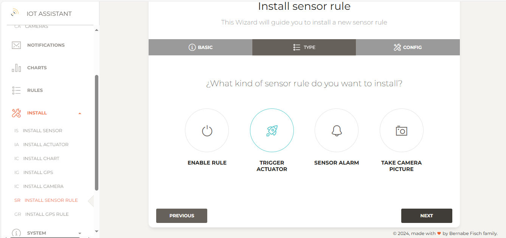

Managing rules
Rules in IoT Assistant automate actions based on conditions involving a device. Supported rules include:
- Sending notifications if a sensor value reaches a threshold
- Setting actuator values if a sensor value reaches a threshold
- Sending notificationss if GPS position is outside a predefined range
- Taking a camera picture if a sensor value reach some threshold
- Enabling or disabling a rule if a sensor value reaches a threshold
Installing a Rule
Installing a Sensor Alarm Rule
This rule allows you to receive notifications if a sensor value reaches a specified threshold. To install it, go toInstall > Install sensor rule to open the setup wizard.
1 - Select the sensor and a property, then click Next
{kind=link}
2 - Select Sensor Alarm rule and click Next
3 - In the final step, provide the following details::{kind=link}
Threshold: The value at which a notification will be triggered.
Minimum time between triggers: The interval for receiving notifications if the threshold is reached multiple times.
Notification type: Choose web (notifications will be displayed on Notifications page) or Telegram
For example, to receive Telegram notifications if the pool temperature reaches or exceeds 32°C, set the threshold as >= 32. To receive only one notification per day, set the minimum time between triggers to 24 hours.

4 - Finally, click on Finish to proceed. If everything is set up correctly, you'll be redirected to the rules page when installed rules are listed. On this page you can enable/disable a rule or delete it.
{kind=link}
5 - After installing the rule, if the temperature exceeds the predefined threshold, you will receive a Telegram notification similar to this:
{kind=link}
Installing a Trigger Actuator Rule
This rule lets you set an actuator value when a sensor value reaches a specified threshold. To install it, go to Install > Install sensor rule to open the setup wizard.
1 - Select the sensor and the property and click Next
{kind=link}
2 - Select Trigger Actuator rule and click Next
 3 - In the final step, provide the following details:{kind=link}
Threshold: The value at which the actuator value change will be triggered.
Minimum time between triggers: The interval for triggering the rule if the threshold is reached multiple times.
Notification type: Specify if you want to receive notifications via Telegram when the rule is triggered
{kind=link}
4 - Click on Finish. If everything is set up correctly, you'll be redirected to the rules page.
{kind=link}
Installing a Enable Rule
This rule enables or disables an installed rule when a sensor value reaches a specific threshold. This is useful, for example, to toggle a sensor alarm on or off using another button sensor. To install this rule, go to Install > Install sensor rule to open the setup wizard.
1 - Select the sensor and property and click Next
{kind=link}
2 - Select Enable rule and click on Next
3 - In the final step, provide the following details:{kind=link}
Threshold: The value at which the enabling or disabling rule action will be triggered.
Minimum time between triggers: The interval for triggering the rule if the threshold is reached multiple times.
Notification type: Specify if you want to receive notifications via Telegram when the rule is triggered
Rule Id: Specify the rule that will be disabled/enabled when the threshold is reached. You can find the Rule Id on the rules page.
{kind=link}
4 - Click on Finish. If everything is set up correctly, you'll be redirected to the rules page.
{kind=link}
Installing a Camera Picture Rule
This rule allows you to receive notifications with a camera picture attached when a sensor value reaches a specified threshold. To install this rule, go to Install > Install sensor rule to open the setup wizard.
1 - Select the sensor and property and click Next

2 - Select Take Camera Picture rule and click Next
3 - In the final step, provide the following details:{kind=link}
Threshold: The value at which the enabling or disabling rule action will be triggered.
Minimum time between triggers: The interval for triggering the rule if the threshold is reached multiple times.
Notification type: Specify if you want to receive notifications via Telegram when the rule is triggered
Camera: Specify the camera taking the picture when the rule is triggered.
In this example we want to receive a Telegram notification when the motion detect movement and get a camera picture with the notification.
{kind=link}
4 - Click on Finish. If everything is set up correctly, you'll be redirected to the rules page.
{kind=link}
5 - After installing the rule, if the motion sensor detects movement we will get a camera picture with a Telegram notification similar to this:
{kind=link}
Installing a Out Of range GPS Rule
This rule allows you to receive notifications when a GPS device goes outside a predefined perimeter. To install this rule go on Install > Install GPS rule to open the setup wizard.
1 - Select GPS device, then click Next
{kind=link}
2 - Select Out Of Range rule and click Next
3 - In the final step, provide the following details:{kind=link}
Latitude, Longitude and Range: Set the predefined position and the distance within which you will receive a notification if the GPS device moves beyond this range.
Minimum time between triggers: The interval for receiving notifications when the position is updated multiple times.
Notification type: Choose whether to receive notifications via web (displayed under Notifications) or Telegram
For example, to receive Telegram notifications if the GPS position is more than 400 meters from the center of Madrid (40.416775, -3.703790), set these parameters accordingly:
{kind=link}
4 - Finally, click on Finish.If everything is set up correctly, you'll be redirected to the rules page.
{kind=link}
5 - After installing the rule you will get Telegram notifications similar to this if the GPS device moves beyond the predefined range:
{kind=link}